Práctica 3.5 - Despliegue de una aplicación Flask
Procedimiento
Instalamos el gestor de pauetes de Python pip:
sudo apt update
sudo apt install python3-pip
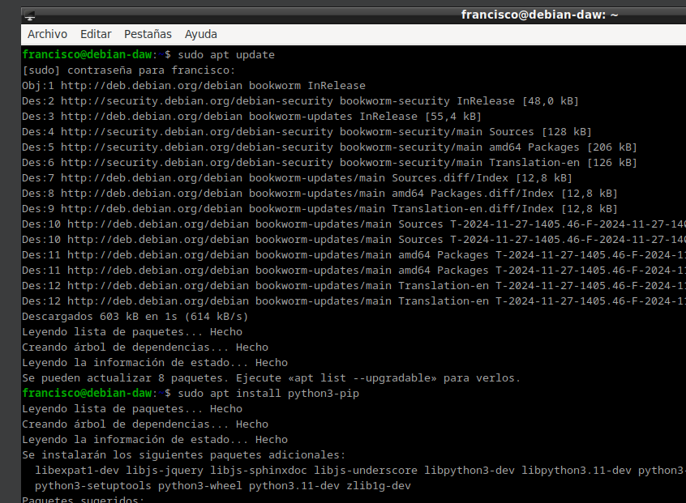
Instalamos pipenv
sudo apt install pipenv
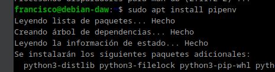
Después de haberlo instalado comprobamos que está instalado correctamente con pipenv --version
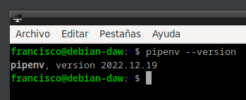
Seguido de esto creamos un directorio en el que almacenaremos nuestro proyecto sudo mkdir /var/www/nombre_mi_aplicacion
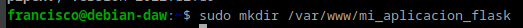
Si hemos creado el directrio con sudo, tenemos que cambiarle los permisos para que el dueño sea nuestro usuario (ud24) y pertenezca al grupo www-data
sudo chown -R $USER:www-data /var/www/mi_aplicacion
chmod -R 775 /var/www/mi_aplicacion
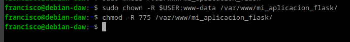
Ahora, tenemos que crear un archivo oculto .env dentro de nuestra aplicación
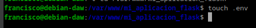
Hay que modificar el arvhivo y añadir las variables, indicando cual es el arvhivo .py de la aplicación.
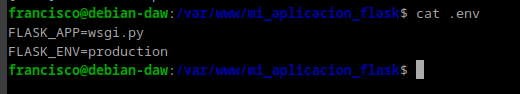
Iniciamos el entorno virtual pipenv shell
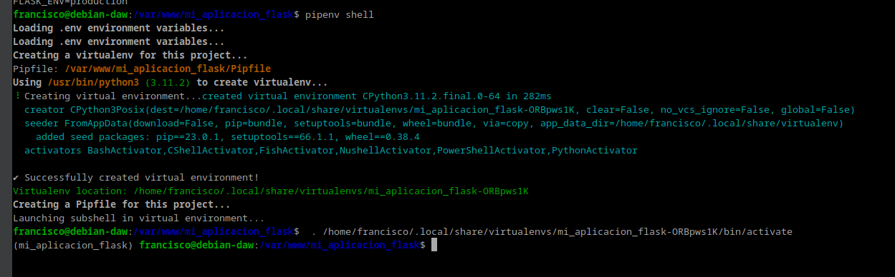
Instalamos las dependencias de nuestro proyecto pipenv install flask gunicorn
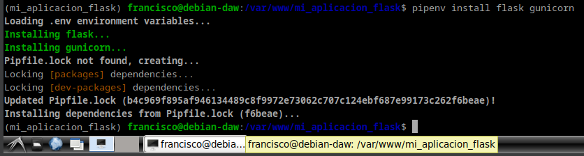
Vamos a crear la aplicación Flask más simple posible touch application.py wsgi.py
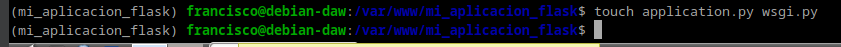
Añadimos la siguiente configuración a los archivos: application.py:
from flask import Flask
app = Flask(__name__)
@app.route('/')
def index():
'''Index page route'''
return '<h1>Aplicacion desplegada</h1>'
wsgi.py
from application import app
if __name__ == '__main__':
app.run(debug=False)
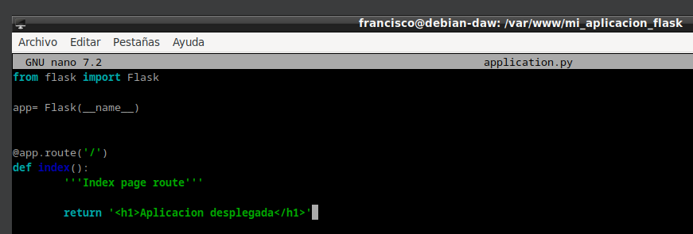 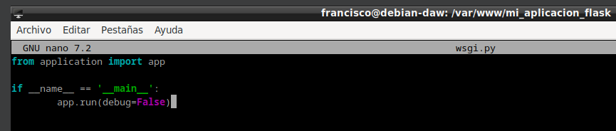
Lanzamos la aplicación con el comando flask run --host '0.0.0.0'
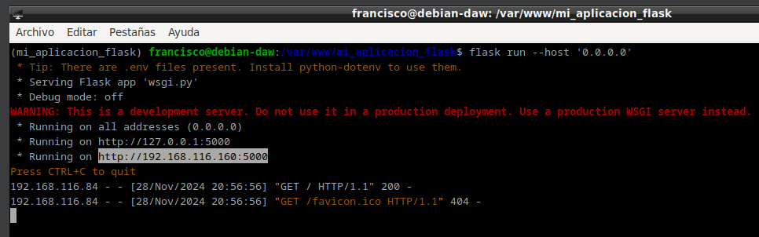
Podemos acceder desde nuestra máquina anfitriona accediento a la Ip de la máquina virtual y el puerto 5000
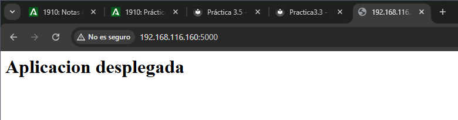
Si ha funcionado lo anterior, vamos a comprobar que funciona correctamente usando Gunicorn. gunicorn --workers 4 --bind 0.0.0.0:5000 wsgi:app
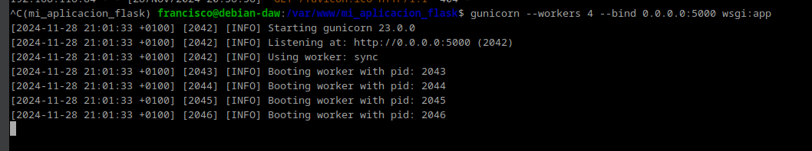
Todavía dentro de nuestro entorno virtual, debemos tomar nota de cual es el path o ruta desde la que se ejecuta gunicorn para poder configurar más adelante un servicio del sistema. Podemos averigurarlo así: 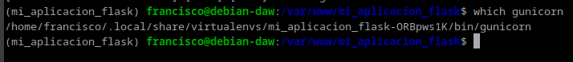
Iniciamos Nginx y comprobamos que se ha activado
sudo systemctl start nginx
sudo systemctl status nginx
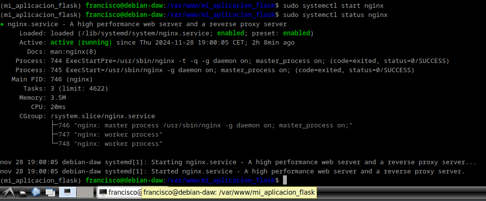
Ahora, fuera de nuestro entrono virtual, tnenmos que crear un archivo para que systemd corra Gunicorn como un servicio sudo nano /etc/systemd/system/flask_app.service
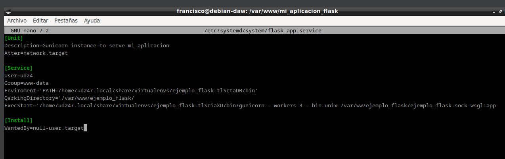
Habiltamos el servicio y se inicia
systemctl enable nombre_mi_servicio
systemctl start nombre_mi_servicio
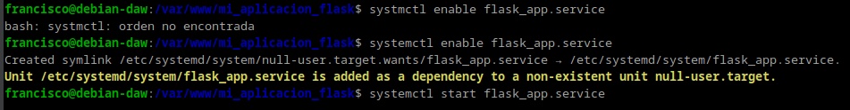
Creamos un archivo con el nombre de nuestra aplicación y dentro estableceremos la configuración para ese sitio web. El archivo, como recordáis, debe estar en /etc/nginx/sites-available/nombre_aplicacion y tras ello lo editamos para que quede: